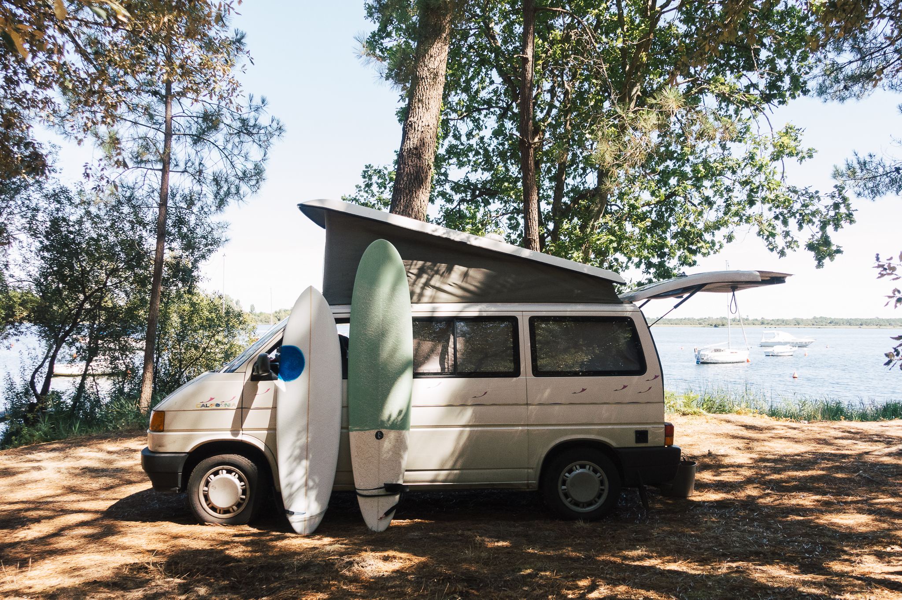
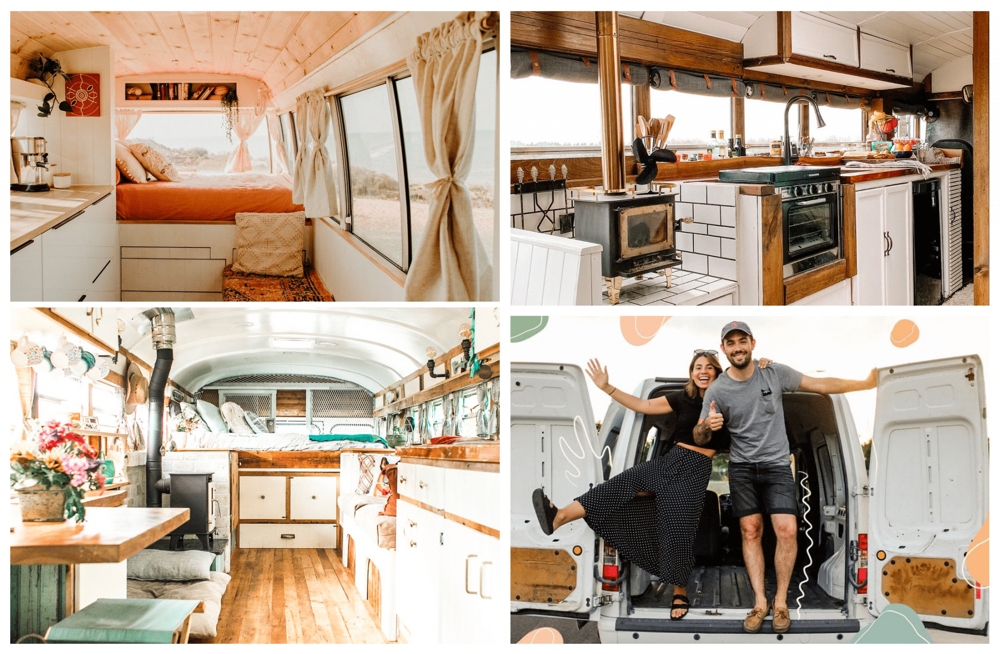
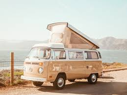
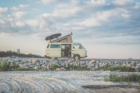
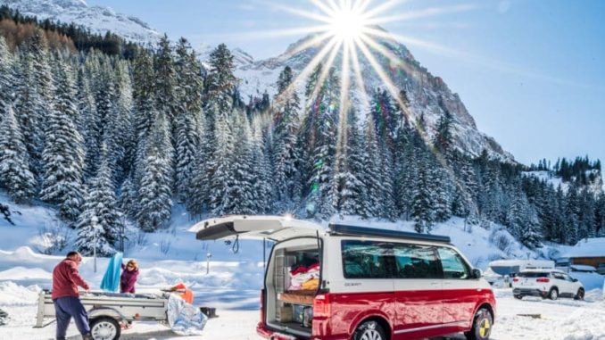
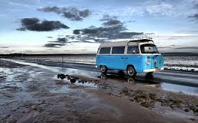
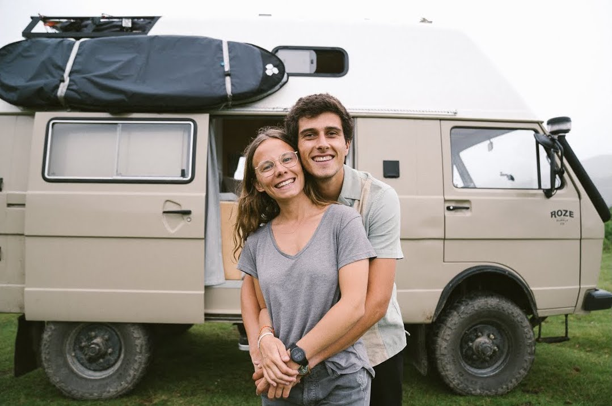
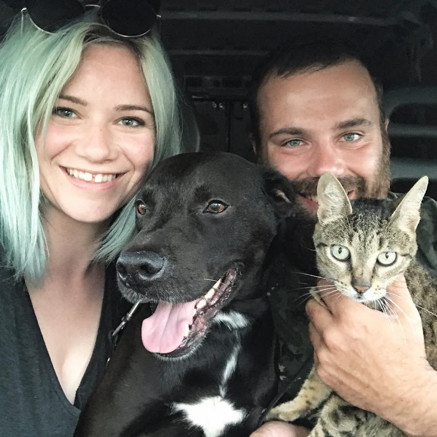
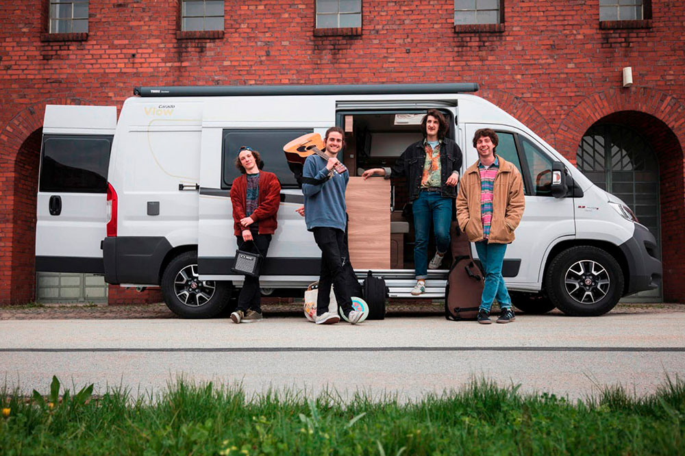

Quesaco?

La Vanlife, c'est un mode de vie assez particulier qui consiste à vivre dans un véhicule lors d'un voyage par exemple. Idéal pour les aventuriers et les amoureux des trips à l'étranger, il permet de voir la vie d'une autre façon et de pouvoir s'éclater en toute tranquilité. Néanmoins, ce n'est pas fait pour tous et vous allez vite comprendre pourquoi.
Pas de frais d'hotêl ou de logement, il suffit juste de toruver un endroit où garer le véhicule. Le temps ne sera pas un problème en Van, c'est vous qui décidez tout. Petit bémol pour les amoureux de l'hygiène... Toilette dans la douche, toilette sèche ou toilettes/douches publiques seront au rendez-vous. A vous de voir si cela vous convient ou pas. Il y a toujours des solutions!
La Vanlife permet de passer des moments inoubliables, de voir des paysages sublimes et de découvrir des parties du monde inconnues au yeux du public.
Cette idée vous plait? Alors lancez-vous! Vous trouverez toutes les informations nécessaires sur ce blog pour être au top lors de vos voyages en Van.
Que faut-il?

Plusieurs choses nécessaires de prime abord. L'essence est la première, et oui vous ne pourrez-pas aller bien loin sans. Il existe de nombreuses applications pour voir les bornes d'essences les plus proches de vous et les moins cher. Différente selon les pays, à vous de chercher!
De plus, prévoyez de quoi vous couvrir si vous allez dans des endroits froids, une bonne partie des Vans n'ont pas de chauffage. Si vous avez beaucoup d'appareils électroniques, je vous conseil d'acheter des batterie externes qui sont bien plus pratiques de de laisser son téléphone dans une borne publique.
En ce qui concerne la nourriture et l'eau, les carafes filtrantes sont les meilleures. Elles permettent d'avoir de l'eau potable avec n'importe quelle eau (de rivières, de flaques d'eau...). De la vaisselle est indispensables, pas de recommendations particulières à ce sujet, ce sont les mêmes que dans une vraie maison!
Pensez à bien vous renseignez et de tout vérifier avant de partir à l'aventure, un oubli est vite arrivé!
Les vans
Je vous met à disposition plusieurs photos de Van aménagé différents pour vous montrer que vous pouvez partir découvrir le monde avec différents véhicules selon les besoins, le lieu et les attentes de chacun.




Personnalités
Personnellement, je suis plusieurs personnes sur les réseaux qui sont vraiment inspirantes et qui donnent envie de voyager.

Premièrement, il y a Gregsway. Vous trouverez sur sa chaine et son instagram toute sa vie avec Henry the bus et Oscar, ses deux vans, Séverine sa copine et tout son matériel incroyable! Mon préféré. :)

Ensuite, il y a Wood&Woad. Un couple parti sur les routes dans un van avec leurs deux chiens et leur chat. Allez les découvrir!

Découvrez également Florent et sa chaine "Ma vie en van" qui est un youtubeur américan allant découvrir les routes de la "véritable Amérique". Allez également lire son livre intitulé "Ma vie en van". :)